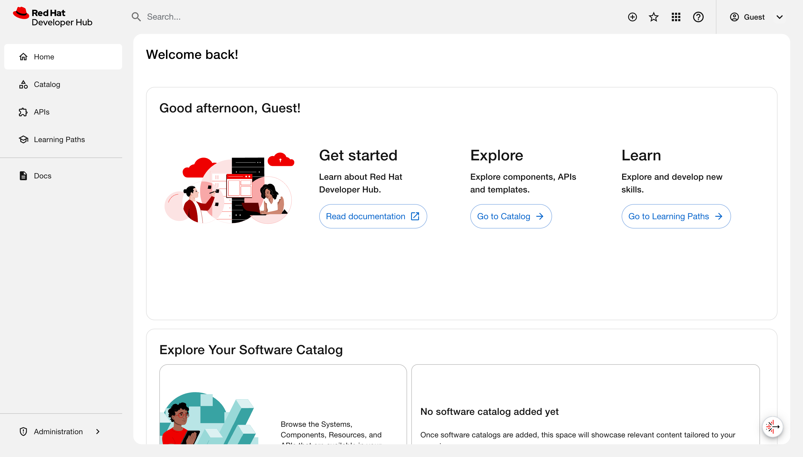
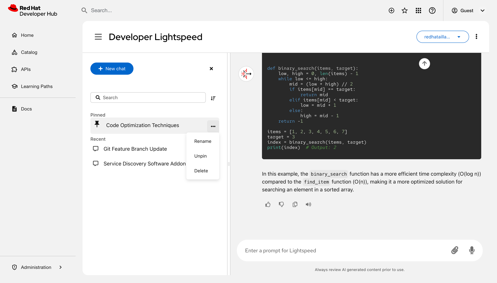
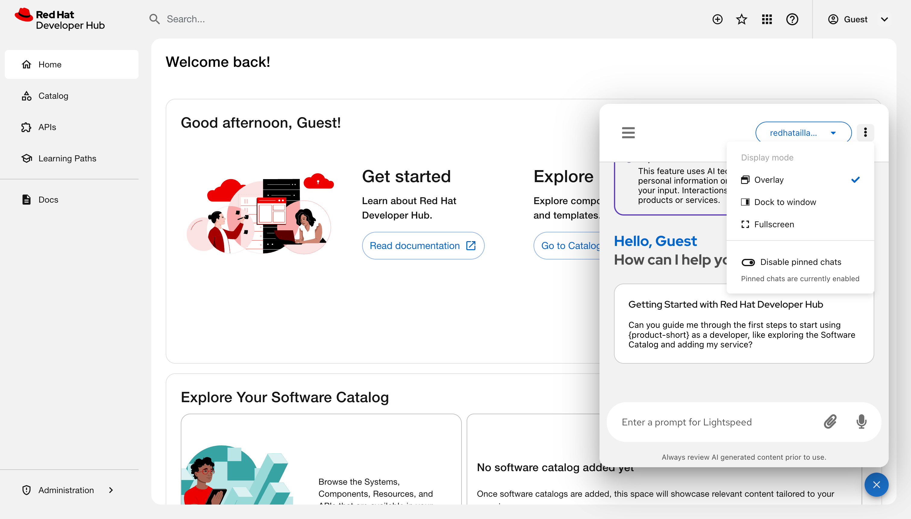
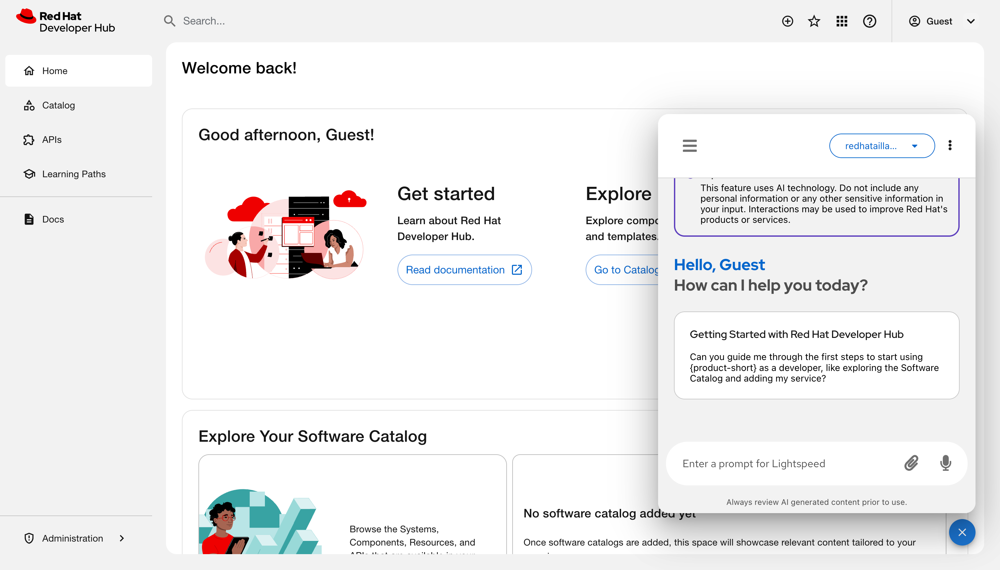
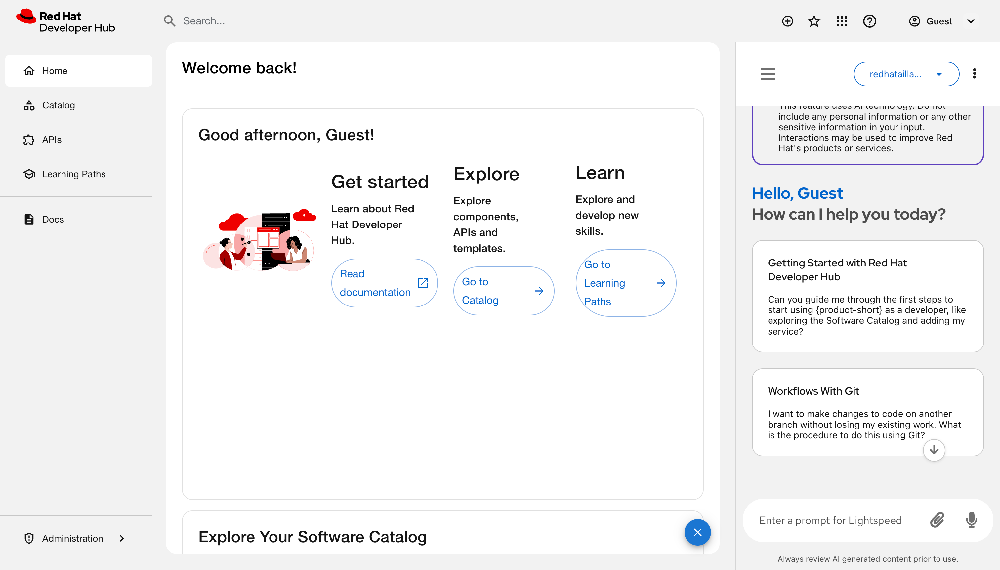
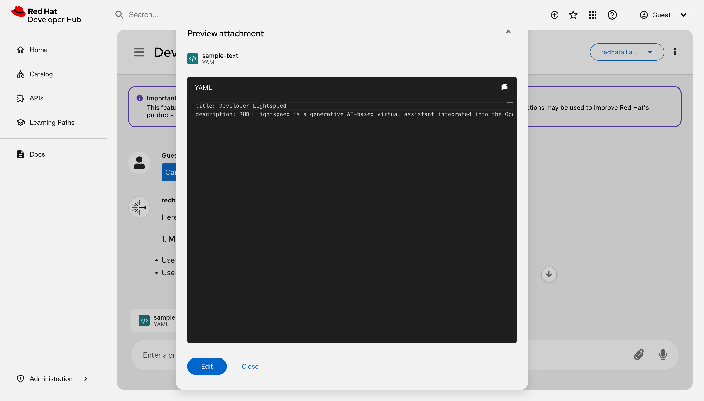
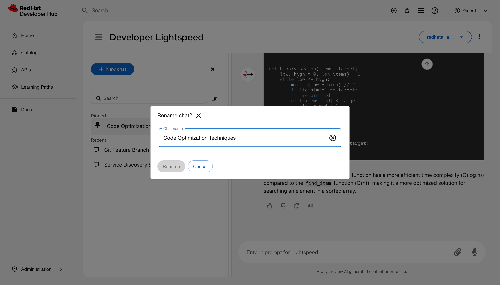
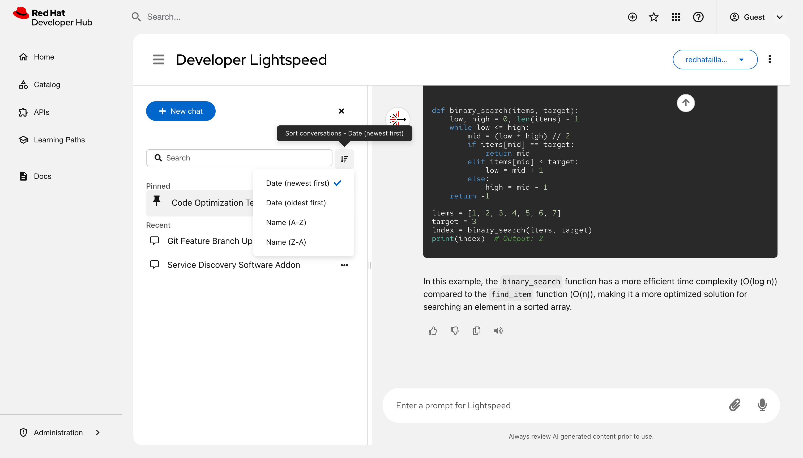
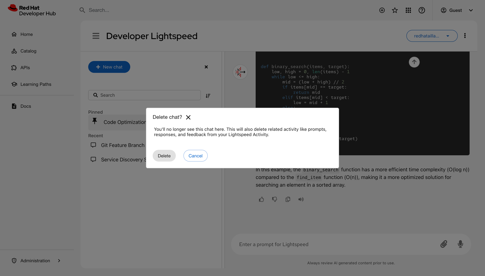

Interacting with Red Hat Developer Lightspeed for Red Hat Developer Hub
Leverage Artificial Intelligence (AI)-driven expertise of the Red Hat Developer Lightspeed for Red Hat Developer Hub (Developer Lightspeed for RHDH) virtual assistant to help you use Red Hat Developer Hub (RHDH)
Abstract
- 1. Chat assistance with Developer Lightspeed for RHDH
- 2. Red Hat Developer Lightspeed for Red Hat Developer Hub architecture for your AI backend deployment
- 3. Retrieval augmented generation (RAG) embeddings for grounded AI responses
- 4. Configure Developer Lightspeed for RHDH to initialize the AI assistant
- 5. Customize Developer Lightspeed for RHDH to tailor AI responses
- 6. Get AI-assisted help for your development tasks
- 7. AI model evaluation data to select the right AI model
- 7.1. Configure the evaluation environment to validate model accuracy
- 7.2. Prepare evaluation datasets to verify AI-generated responses
- 7.3. Run performance tests to ensure AI response reliability
- 7.4. Analyze evaluation results to identify performance gaps
- 7.5. Evaluation metrics and historical data reference
- 7.6. Release report and historical data
- 8. Appendix: LLM requirements
- 9. Appendix: Manage user data security
Red Hat Developer Lightspeed for Red Hat Developer Hub (Developer Lightspeed for RHDH) is an AI-powered virtual assistant for Red Hat Developer Hub (RHDH). You can interact with Developer Lightspeed for RHDH to explore RHDH capabilities in detail.
1. Chat assistance with Developer Lightspeed for RHDH
Use Developer Lightspeed for RHDH to find product information, discover features, and resolve technical questions using natural language prompts directly within the RHDH console.
Developer Lightspeed for RHDH uses a FAB instead of a sidebar navigation item. If your environment uses another global FAB, you must move the existing button or disable it to prevent interface elements from overlapping. In your dynamic plugin configuration file, make the following update:
- package: ./dynamic-plugins/dist/red-hat-developer-hub-backstage-plugin-bulk-import
disabled: true
pluginConfig:
dynamicPlugins:
frontend:
red-hat-developer-hub.backstage-plugin-bulk-import:
mountPoints:
- mountPoint: global.floatingactionbutton/config
importName: BulkImportPage # Example
config:
slot: 'bottom-left'
icon: BulkImportIcon
label: 'Bulk import'
toolTip: 'Register multiple repositories in bulk'
to: /bulk-import
translationResources:
- importName: bulkImportTranslations
module: Alpha
ref: bulkImportTranslationRef
appIcons:
- name: bulkImportIcon
importName: BulkImportIcon
dynamicRoutes:
- path: /bulk-import
importName: BulkImportPage
menuItem:
icon: bulkImportIcon
text: Bulk import
textKey: menuItem.bulkImport
2. Red Hat Developer Lightspeed for Red Hat Developer Hub architecture for your AI backend deployment
Review the Developer Lightspeed for RHDH component architecture to plan your system layout and coordinate connections with your artificial intelligence (AI) backend deployment.
The architecture relies on the Lightspeed Core Service (LCORE) container, which operates as the primary intermediary layer to manage {Developer Lightspeed for RHDH functionality and console user interactions. By default, the interface appears as a floating action button (FAB) on all platforms that host RHDH.
Additional resources
2.1. AI reference and tool-calling capabilities through Lightspeed Core Service
Review the core components managed by the Lightspeed Core Service(LCORE) sidecar container to plan integrations with large language models (LLM) and tool runtime providers.
The LCORE container deploys as a sidecar to extend RHDH functionality. The container integrates and manages the following core architectural components:
- Large language model (LLM) inference providers
Model Context Protocol (MCP) or Retrieval Augmented Generation (RAG) tool runtime providers
ImportantYou must verify that your model supports tool calling before you enable MCP features. Using an incompatible model results in error messages.
- Safety providers
- Vector database settings
LCORE also manages critical operational configuration and key data, specifically:
- User feedback collection
- MCP server configuration
- Chat history
Developer Lightspeed for RHDH sends prompts and receives LLM responses through the LCORE sidecar.
3. Retrieval augmented generation (RAG) embeddings for grounded AI responses
Use retrieval-augmented generation (RAG) embeddings to ground artificial intelligence (AI) responses in your internal documentation and provide verified citations during user interactions.
The RHDH documentation serves as the primary data source for RAG operations. To provide accurate citations to production documentation during inference, the system uses RAG embeddings stored within a vector database.
The system processes RAG data through the following sequence:
- An initialization container copies the RAG data to a shared volume.
- The Lightspeed Core Service (LCORE) sidecar container mounts the shared volume to access the data.
- The sidecar layer uses the embeddings to attach precise documentation references to the console responses.
4. Configure Developer Lightspeed for RHDH to initialize the AI assistant
Red Hat Developer Lightspeed for Red Hat Developer Hub is enabled by default on Red Hat Developer Hub (RHDH) instances. To provide developers with chat assistance, you must configure your deployment settings by using either the the Operator or the Helm chart.
You must perform a fresh installation to ensure compatibility with the updated system architecture. Do not update directly from version 1.9. Direct updates cause operational errors because the Helm values.yaml file structure has changed.
4.1. Configure Developer Lightspeed for RHDH by using the Operator
Configure Developer Lightspeed for RHDH by updating your Backstage custom resource (CR) to map environment variables, manage configurations, and set access rights.
Prerequisites
- The RHDH Operator is installed on your cluster.
- You have cluster administrator privileges.
Procedure
Optional: To disable the chat interface and prevent the Operator from injecting unconfigured sidecar containers, set the
lightspeed.enabledflag tofalsein thespecsection of your Backstage CR YAML file:spec: application: lightspeed: enabled: falseCreate an opaque Kubernetes Secret containing your operational credentials and query safety guardrails before applying the Backstage CR.
Key Description ENABLE_<PROVIDER>Enables the specific LLM layer (
VLLM,OPENAI,OLLAMA, orVERTEX_AI) when set totrue.<PROVIDER>_API_KEYStores the authorization token for your inference platform.
<PROVIDER>_URLSpecifies the endpoint target URL for your provider.
ENABLE_VALIDATIONActivates query guardrails when set to
true.VALIDATION_PROVIDERDefines which active provider manages verification routines.
The following code shows an example configuration Secret for vLLM with validation:
apiVersion: v1 kind: Secret metadata: name: lightspeed-auth-secrets type: Opaque stringData: ENABLE_VLLM: "true" VLLM_URL: "https://<api_endpoint>/v1" VLLM_API_KEY: "<api_key>" ENABLE_VALIDATION: "true" VALIDATION_PROVIDER: "vllm" VALIDATION_MODEL_NAME: "gpt-4o-mini"
Map your secret inside the
extraEnvssection of the Backstage CR to complete container provisioning:apiVersion: rhdh.redhat.com/v1alpha5 kind: Backstage metadata: name: lightspeed-rhdh spec: application: extraEnvs: secrets: - name: lightspeed-auth-secrets containers: - lightspeed-coreOptional: To protect settings such as Model Context Protocol (MCP) server additions from being overwritten during reconciliation loops, define a custom ConfigMap mapping in the
extraFilessection of the CR:extraFiles: configMaps: - name: "my-custom-config" mountPath: /app-root key: lightspeed-stack.yaml containers: - lightspeed-coreTo grant non-administrator teams access to the virtual assistant, update the RBAC policy inside your Backstage CR by appending permission lines to the
rbac-policies.csvsection, replacing<team>with your team name:p, role:default/<team>, lightspeed.chat.read, read, allow p, role:default/<team>, lightspeed.chat.create, create, allow
Apply the updated custom resource manifest to your cluster:
oc apply -f <backstage_cr_file>.yaml
Verification
- Log in to your console instance.
- Verify that the Open Lightspeed floating action button (FAB) appears on the home page.
- Select the FAB and confirm that the chat window initializes successfully.
4.2. Configure Developer Lightspeed for RHDH by using the Helm chart
Configure Developer Lightspeed for RHDH by using the Helm chart to manage large language model (LLM) providers, enable validation guardrails, and authorize custom role-based access control (RBAC) policies.
Prerequisites
- You have access to a running RHDH instance deployed with Helm.
- You have operational credentials for your chosen LLM provider.
Procedure
Optional: To disable the chat interface, update the
global.lightspeed.enabledparameter tofalsein your Helmvalues.yamlfile:global: lightspeed: enabled: falseCreate a manual Kubernetes Secret to store your provider credentials.
NoteBy default, the Helm installation creates a temporary Kubernetes Secret containing keys for various LLM providers. On subsequent
helm upgradecycles, the system deletes this default Secret. You must create a manual Kubernetes Secret to persist your credentials.Add the following keys to your secret based on your provider requirements:
vLLM:: SetENABLE_VLLMto"true"SetVLLM_URLto"<your_url>/v1"SetVLLM_API_KEYto your key stringOpenAI:: SetENABLE_OPENAIto"true"SetOPENAI_API_KEYto your secret keyOllama:: SetENABLE_OLLAMAto"true"SetOLLAMA_URLto your endpoint URLVertex AI:: SetENABLE_VERTEX_AIto"true"SetVERTEX_AI_PROJECTto your project ID SetVERTEX_AI_LOCATIONto your region ** SetGOOGLE_APPLICATION_CREDENTIALSto the path of your mounted credentials JSON file.+
NoteVertex AI requires custom architecture mapping and has received limited testing.
Optional: To filter and reject off-topic user queries, add validation guardrails to your manual Secret:
-
Set
ENABLE_VALIDATIONto"true". -
Set
VALIDATION_PROVIDERto your enabled validation provider (for example,openai). -
Set
VALIDATION_MODEL_NAMEto your specific verification model (for example,gpt-4o-mini).
-
Set
Reference your manual secret inside the
values.yamlfile:global: lightspeed: secret: create: false name: "my-custom-secret"Optional: To protect configuration files like
lightspeed-stack.yaml,config.yaml, orrhdh-profile.pyfrom being overwritten during updates, you must use a custom ConfigMap:global: lightspeed: configMaps: - name: stack create: false nameOverride: "my-custom-stack" mountPath: /app-root/lightspeed-stack.yaml subPath: lightspeed-stack.yaml sourceFile: lightspeed-stack.yaml optional: falseTo grant non-administrator teams access to the virtual assistant, append permission strings to the
rbac-policies.csvsection of yourvalues.yamlfile, replacing<team>with the target group name:p, role:default/<team>, lightspeed.chat.read, read, allow p, role:default/<team>, lightspeed.chat.create, create, allow
-
Run the
helm upgradecommand to apply your configurations to the cluster.
Verification
- Log in to your console instance.
- Verify that the Open Lightspeed floating action button (FAB) appears on the home page.
- Select the FAB and confirm that the chat window initializes successfully.
4.3. Developer Lightspeed for RHDH in air-gapped environments
To provide chat assistance in a network environment without internet access, you must mirror the required Developer Lightspeed for RHDH container images to your local registry.
This infrastructure process ensures that your secure environment can pull the necessary sidecar images inside your network perimeter.
Additional resources
5. Customize Developer Lightspeed for RHDH to tailor AI responses
You can customize Developer Lightspeed for RHDH to meet your environment requirements by managing user feedback, persisting chat history, and configuring Model Context Protocol (MCP) tools.
5.1. Enable user feedback to improve model performance
Enable user feedback collection to allow users to rate chat responses and submit text comments directly within the console interface.
The Lightspeed Core Service (LCORE) stores this data as JSON files inside your cluster. Because Red Hat does not collect or access this data, platform administrators must manage, analyze, and delete these files locally.
Prerequisites
- You have platform administrator privileges.
- You created and referenced a custom ConfigMap in your deployment to ensure configuration changes persist during system upgrades or Operator reconciliation loops.
Procedure
-
Open your custom configuration file, such as
lightspeed-stack.yaml. Modify the
user_data_collectionblock to configure your data preferences:To enable feedback collection, set the
feedback_enabledparameter totrue:user_data_collection: feedback_enabled: true feedback_storage: "/tmp/data/feedback" transcripts_enabled: true transcripts_storage: "/tmp/data/transcripts"
To disable feedback collection, set the
feedback_enabledparameter tofalse:user_data_collection: feedback_enabled: false feedback_storage: "/tmp/data/feedback" transcripts_enabled: true transcripts_storage: "/tmp/data/transcripts"
Do not modify the feedback_storage or transcripts_storage data paths when disabling feedback. Altering these path strings prevents the service from locating existing historical logs.
- Apply the updated configuration file changes to your cluster by running your platform’s standard deployment or upgrade sequence.
5.2. Customize AI responses by using system prompts
Configure a custom system prompt to provide environmental context to the large language model (LLM). This custom instruction prefixes user queries, guiding the assistant to generate artificial intelligence (AI) responses tailored to your RHDH instance.
Prerequisites
- You have administrative access to the RHDH host platform filesystem.
Procedure
-
Open your RHDH configuration file, typically named
app-config.yaml. Add or modify the
systemPromptparameter under thelightspeedsection, specifying your custom instruction string:lightspeed: # ... other lightspeed configurations systemPrompt: "You are a helpful assistant focused on Red Hat Developer Hub development."
- Save the file.
- Restart the RHDH service to apply the updated system prompt configuration.
5.3. Customize chat history storage
Configure chat history storage to choose between non-persistent local logs and a persistent external database for user conversations.
By default, the system stores chat history in a non-persistent local database within the Lightspeed Core Service (LCORE) container. To retain data across system restarts, you must configure a PostgreSQL database connection.
Storing chat history records user prompts and responses. You must assess data privacy and security implications if your user chat history contains private, sensitive, or confidential information. For users that want to have their chat data removed, they must request their platform administrator to perform this action. Red Hat does not collect or access this chat history data.
Prerequisites
- You created and referenced a custom ConfigMap in your deployment to ensure configuration changes persist during system upgrades or Operator reconciliation loops.
Procedure
-
Open your custom configuration file, typically named
lightspeed-stack.yaml. Modify the
conversation_cacheblock to specify your storage configuration:To enable persistent storage, add your PostgreSQL database credentials and endpoint properties:
conversation_cache: type: postgres postgres: host: _<your_database_host>_ port: _<your_database_port>_ db: _<your_database_name>_ user: _<your_user_name>"_ password: _<postgres_password>_To retain the default non-persistent SQLite setup, verify that the parameters match the following paths:
conversation_cache: type: "sqlite" sqlite: db_path: "/tmp/data/conversations/lcs_cache.db"
- Restart the LCORE service to apply your new database configuration.
6. Get AI-assisted help for your development tasks
Use Red Hat Developer Lightspeed for Red Hat Developer Hub, a generative AI assistant in Red Hat Developer Hub (RHDH), to ask platform questions, analyze logs, generate code, and create test plans from a chat interface.
6.1. Prerequisites
- Your platform engineer has configured the Developer Lightspeed for RHDH service in your RHDH instance.
6.2. Configure safety guards in Red Hat Developer Hub
To protect users from insecure or harmful AI model outputs, Red Hat Developer Hub (RHDH) uses Llama Guard as a default safety shield. You must configure these guards to align with your organization’s security policies.
Default safety guard configuration-
The system uses Llama Guard as the default safety shield. Override these settings in the
run.yamlfile.
The external_providers_dir parameter defaults to null and is no longer required in your configuration.
Overriding safety guards-
To implement custom security layers or different safety shields, you must define a new safety provider within a custom
run.yamlfile. Disabling safety guards-
To run RHDH without safety guards, you must use the
run-no-guard.yamlconfiguration file.
Running without safety guards increases the risk of invalid model output. Only use this configuration in secure development environments.
Applying the no-guard configuration- To run the system without a safety guard, perform these steps:
Procedure
Add the following YAML file as a config map to your namespace:
version: 2 image_name: redhat-ai-dev-llama-stack-no-guard apis: - agents - inference - safety - tool_runtime - vector_io - files container_image: external_providers_dir: providers: agents: - config: persistence: agent_state: namespace: agents backend: kv_default responses: table_name: responses backend: sql_default provider_id: meta-reference provider_type: inline::meta-reference inference: - provider_id: ${env.ENABLE_VLLM:+vllm} provider_type: remote::vllm config: url: ${env.VLLM_URL:=} api_token: ${env.VLLM_API_KEY:=} max_tokens: ${env.VLLM_MAX_TOKENS:=4096} tls_verify: ${env.VLLM_TLS_VERIFY:=true} - provider_id: ${env.ENABLE_OLLAMA:+ollama} provider_type: remote::ollama config: url: ${env.OLLAMA_URL:=http://localhost:11434} - provider_id: ${env.ENABLE_OPENAI:+openai} provider_type: remote::openai config: api_key: ${env.OPENAI_API_KEY:=} - provider_id: ${env.ENABLE_VERTEX_AI:+vertexai} provider_type: remote::vertexai config: project: ${env.VERTEX_AI_PROJECT:=} location: ${env.VERTEX_AI_LOCATION:=us-central1} - provider_id: sentence-transformers provider_type: inline::sentence-transformers config: {} tool_runtime: - provider_id: model-context-protocol provider_type: remote::model-context-protocol config: {} - provider_id: rag-runtime provider_type: inline::rag-runtime config: {} vector_io: - provider_id: faiss provider_type: inline::faiss config: persistence: namespace: vector_io::faiss backend: faiss_kv files: - provider_id: localfs provider_type: inline::localfs config: storage_dir: /tmp/llama-stack-files metadata_store: table_name: files_metadata backend: sql_files storage: backends: kv_default: type: kv_sqlite db_path: /tmp/kvstore.db sql_default: type: sql_sqlite db_path: /tmp/sql_store.db sql_files: type: sql_sqlite db_path: /rag-content/vector_db/rhdh_product_docs/1.9/files_metadata.db faiss_kv: type: kv_sqlite db_path: /rag-content/vector_db/rhdh_product_docs/1.9/faiss_store.db stores: metadata: namespace: registry backend: faiss_kv inference: table_name: inference_store backend: sql_default max_write_queue_size: 10000 num_writers: 4 conversations: table_name: openai_conversations backend: sql_default registered_resources: models: - model_id: sentence-transformers/all-mpnet-base-v2 metadata: embedding_dimension: 768 model_type: embedding provider_id: sentence-transformers provider_model_id: /rag-content/embeddings_model tool_groups: - provider_id: rag-runtime toolgroup_id: builtin::rag vector_dbs: - vector_db_id: rhdh-product-docs-1_8 embedding_model: sentence-transformers/all-mpnet-base-v2 embedding_dimension: 768 provider_id: faiss server: auth: host: port: 8321 quota: tls_cafile: tls_certfile: tls_keyfile:Mount the config map to your Llama Stack container at
/app-root/run.yamlto make sure it overrides the default image file:name: llama-stack volumeMounts: - mountPath: /app-root/run.yaml subPath: run.yaml name: llama-stack-config
Configure the required volume:
volumes: - name: llama-stack-config configMap: name: llama-stack-configwhere:
llama-stack-config- The config map where you added the new no-guard configuration file.
- Restart the deployment if it does not trigger an automatic rollout.
6.3. Best results for assistant queries
To resolve technical blockers and accelerate development tasks, you must structure your queries to give specific context to the AI assistant. Using precise prompts makes sure that Developer Lightspeed for RHDH generates relevant code snippets, architectural advice, or platform-specific instructions.
Use the following strategies to improve the accuracy of the assistant’s output during your development workflow:
- Specify technologies
- Instead of asking "How do I use templates?", ask "How do I create a Software Template that scaffolds a Node.js service with a CI/CD pipeline".
- Give context
- Include details about your environment, such as "I am deploying to OpenShift; how do I set up my catalog-info.yaml to show pod health?".
- Use conversation context
- Ask follow-up questions to refine an earlier answer. For example, if the assistant gives a code snippet, you can ask "Now rewrite that using TypeScript interfaces."
- Validate with citations
- Check the provided documentation links and citations in the response to verify that the generated advice aligns with your organization’s official standards.
- Improve assistant accuracy
- Rate the utility of responses by selecting the Thumbs up or Thumbs down icons. This feedback helps tune the model for your organization’s specific requirements.
To keep your data secure, do not include sensitive personal information, plain text credentials, or confidential business data in your queries.
6.4. AI response monitoring and context management
Developer Lightspeed for RHDH provides features to track the AI reasoning process and keep the context of your development tasks.
- Thinking cards
- An expandable thinking card is displayed while the AI processes a query. A pulse animation indicates the reasoning phase. You can expand the card to view detailed reasoning or collapse it to minimize screen clutter.
- Tool call transparency
- An expandable card displays details for Model Context Protocol (MCP) tool calls, which you can use to monitor background processes.
- Context-aware citations
- Retrieval-Augmented Generation (RAG) citations appear only when the AI uses internal documentation. This makes sure that general knowledge responses remain concise.
- Context preservation during model changes
- When you select a different AI model, Developer Lightspeed for RHDH starts a new conversation. This keeps your earlier chats available in your history.
- Structural readability
- The interface formats headings and bullet points automatically to make sure responses are scannable.
6.5. Manage chats
Manage your chat history and configuration in RHDH to organize your workspace, resume earlier tasks, or find past solutions.

Prerequisites
- You have configured the Developer Lightspeed for RHDH plugin in Red Hat Developer Hub.
- You have logged in to the portal.
Procedure
- Click the Open Lightspeed floating action button (FAB) at the lower right of the screen to open the chat overlay.
Optional: Configure the interface display and server settings:
- Click the Chatbot options icon (⋮) to view chat history or start a new chat.
Click the Display mode icon and select any of the following views:

Overlay: A floating window is displayed over the current page content.

Dock to window: A panel attaches to the right side of the screen. Activating this mode automatically closes the quick start panel if it is already open.

Fullscreen: A dedicated page opens for intensive chat sessions. You can bookmark this URL for direct access.
- Optional: Toggle Enable pinned chats/Disable pinned chats to enable or hide the pinned chats. The system enables this option by default.
- Available only if MCP is configured: MCP settings: Manage Model Context Protocol connections.
Start a chat or load an earlier session:
- Enter a prompt: Type a query in the Enter a prompt for Lightspeed chat field and press Enter.
- Use a sample: Click a prompt tile.
Attach a file: Click Attach to upload a
.yaml,.json, or.txtfile.- Click the file name to open the preview model.
View or edit the content of the file:

- Use voice: Click the Use microphone icon.
- Resume a chat: Select a title from the Recent list.
Organize your chat history:
- Start a new topic: Click New chat to reset the assistant’s context.
- Search history: Enter a keyword in the Search field.
Rename a session: Click Options next to a chat title, select Rename, and enter a new name.

- Pin a chat:: Click Options next to a chat title and select Pin. The chat moves to the Pinned group.
Sort chats:: Click Sort control and choose a sorting criteria, such as Date (Newest first).

Delete a chat: Click Options next to a chat title and select Delete.

- Hide the chat history section and reduce visual noise: Select the Close icon (x) next to New chat.
- Restore access to your pinned chat: Select the Chat history menu icon.
- Optional: To hide the interface, if you are in the Overlay or Dock to window mode, click the Close Lightspeed icon (X) to hide the window. If you are in Fullscreen mode, revert to the other modes and click the Close Lightspeed icon (X). The system preserves your active query and history.
- Optional: In Fullscreen mode, bookmark the URL in your browser to save a direct link to the chat interface.
Verification
- The main window displays the active chat or selected history.
- The chat history list reflects renamed, pinned, or deleted entries.
7. AI model evaluation data to select the right AI model
Use the Red Hat Developer Lightspeed for Red Hat Developer Hub evaluation framework to validate the performance, accuracy, and reliability of Developer Lightspeed for RHDH.
With this automated toolset, you can measure how effectively various large language models (LLMs) answer questions based on Red Hat Developer Hub documentation.
Table 1. Components of the evaluation framework
| Component | Description |
|---|---|
|
Evaluation framework |
Contains the core logic and scripts used to run evaluations. |
|
Datasets |
Includes the input files used to test the model. |
|
Evaluation metrics integration |
Provides scoring through various metrics, including Ragas, DeepEval, and custom metrics. Ragas is the primary metric used to validate Developer Lightspeed for RHDH performance. |
7.1. Configure the evaluation environment to validate model accuracy
Set up the evaluation environment to validate the performance and accuracy of Developer Lightspeed for RHDH. Configure this evaluation to ensure the model correctly interprets documentation and provides dependable answers.
By performing these evaluations, you minimize the risk of the model delivering incorrect or hallucinated information to users in production.
Prerequisites
- Install uv for Python package management (Python 3.11 or later).
Procedure
Clone the evaluation repository and navigate to the directory:
git clone https://github.com/lightspeed-core/lightspeed-evaluation cd lightspeed-evaluation
Synchronize the environment and install dependencies:
uv sync
Configure the environment variables for the judge LLM. You can create a
.envfile in the root directory or export the keys directly to your terminal.If you use Gemini, you must set the Gemini API key:
export GEMINI_API_KEY="your-google-api-key"
If you use OpenAI, you must set the OpenAI API key:
export OPENAI_API_KEY="your-key"
Optional: If you test with a live service, set your Developer Lightspeed for RHDH service API key:
export API_KEY="your-lightspeed-service-key"
Verification
Verify that the environment is synchronized and the virtual environment is active:
uv run python --version
The output must return Python 3.11 or later.
7.2. Prepare evaluation datasets to verify AI-generated responses
Prepare evaluation datasets to test the performance of Developer Lightspeed for RHDH. You can use pre-generated AI datasets for specific Red Hat Developer Hub releases or generate custom AI datasets from your own documentation.
Prerequisites
- You must clone the evaluation repository to your local machine.
Procedure
Download pre-generated datasets: Use this method to test the performance of specific RHDH releases. These datasets are generated using Ragas testset generation for RAG.
- In your terminal, navigate to the /dataset folder in the evaluation repository.
-
Locate the
.evaluation_dataset_yamlfiles. These files are pre-configured for the evaluation tool. To test a historical release, switch to the corresponding branch.
For example, to access the Red Hat Developer Hub 1.8 dataset, switch to the
1.8branch.ImportantThe
mainbranch contains work-in-progress (WIP) datasets. Avoid using this branch for stable evaluations.
Generate custom datasets: Use this method to create a new test set from your own technical documentation.
- Generate a diverse set of question-and-answer (Q&A) pairs by following the Ragas test data generation documentation.
- Ensure your Q&A pairs match the required format by reviewing the evaluation data structure configuration.
Verification
- Verify that your custom dataset matches the required schema before you start the evaluation run.
7.3. Run performance tests to ensure AI response reliability
Use the evaluation framework to run performance tests in either static mode to evaluate pre-recorded responses or dynamic mode to call a live service.
These evaluations identify performance gaps, allow you to compare different large language models (LLMs), and ensure that Developer Lightspeed for RHDH provides reliable information to users.
Prerequisites
- You must install and configure the evaluation environment.
- You must prepare an evaluation dataset.
Procedure
-
Download the
system.yamlconfiguration template from the repository. Configure the parameters in the
system.yamlfile based on your evaluation mode:Field Description llmDefines the judge LLM that scores the responses, such as
gemini-2.5-pro.api.enabledSet to
falsefor static mode to use pre-filled data. Set totruefor dynamic mode to call a live service.api.api_base(Required for dynamic mode only) Provide the URL of your Developer Lightspeed for RHDH service.
api.endpoint_typeSpecify the service configuration type:
streamingorquery.Execute the evaluation by using the
lightspeed-evalcommand:lightspeed-eval \ --system-config config/system.yaml \ --eval-data config/evaluation_data.yaml \ --output-dir ./my_evaluation_results
Verification
- Navigate to the specified output directory and verify that the generated reports contain the model performance scores.
7.4. Analyze evaluation results to identify performance gaps
Determine the performance of Developer Lightspeed for RHDH and identify documentation areas that require model improvement by analyzing evaluation results in the repository. You can use these reports to compare performance across different large language models (LLMs) and topics.
Prerequisites
-
You must have access to the
developer-lightspeed-evaluationrepository.
Procedure
-
In the root of the repository, navigate to the version-specific folder within the
/evaluation-resultdirectory. Open the following files to evaluate performance:
- Model Pass Rate: Compare the overall performance between different LLMs.
- Topic Pass Rate: Identify performance trends and gaps within specific documentation areas.
Verification
- Verify that the reports display data visualizations or metrics consistent with your recent evaluation run.
7.5. Evaluation metrics and historical data reference
Use the available metrics to evaluate the performance of Developer Lightspeed for RHDH at the conversation turn level.
These metrics provide a standardized way to measure the accuracy and reliability of the generated responses and the retrieved content.
| Metric | Description |
|---|---|
|
|
Measures how well the answer is derived solely from the retrieved context. |
|
|
Measures whether the retrieved context contains all information required to answer the question. |
|
|
Verifies if the retrieved documentation chunks are relevant to the user query. |
|
|
Measures the ratio of useful information within the retrieved documentation chunks. |
|
|
Compares the generated response against the expected ground-truth response. This custom metric is implemented in the evaluation tool. |
7.6. Release report and historical data
Use the latest Q&A dataset and evaluation results to monitor the current performance of Developer Lightspeed for RHDH.
Access version-specific branches that contain the datasets and evaluation results required to track improvements or regressions across product releases.
The main branch contains work-in-progress data for versions currently under development. For stable evaluations or historical tracking, you must switch to the branch associated with a specific release.
| Release version | Branch name | Data included |
|---|---|---|
|
Latest stable |
Most recent version branch |
The current question and answer (Q&A) dataset and evaluation results. |
|
Historical |
Previous version branches |
Datasets and evaluation results for previous releases to track regressions. |
8. Appendix: LLM requirements
Review large language model (LLM) provider compatibility and system requirements for OpenAI, Red Hat OpenShift AI, Ollama, and vLLM to plan your Developer Lightspeed for RHDH infrastructure deployment.
8.1. Large language model (LLM) requirements
Review large language model (LLM) requirements to select and plan the integration of a compatible inference provider for your Developer Lightspeed for RHDH deployment.
Developer Lightspeed for RHDH operates on a Bring Your Own Model (BYOM) architecture. Because the service does not include a native model, you must connect a compatible inference provider during installation.
The underlying LCORE service integrates with several platforms that support the OpenAI API, including the following providers:
- OpenAI cloud-based inference services
- Red Hat OpenShift AI enterprise inference servers
- Red Hat Enterprise Linux AI enterprise inference servers
- Ollama desktop inference servers
- vLLM enterprise inference servers
- Gemini services through Vertex AI
8.2. OpenAI model integration for your deployment
Use OpenAI models to provide generative artificial intelligence (AI) inference services, such as GPT 5, for your Developer Lightspeed for RHDH deployment.
The system connects directly to the OpenAI API platform to route user prompts and return model insights. To configure this large language model (LLM) provider, you must have an active API key generated from your OpenAI developer account.
Additional resources
8.3. Ollama model integration for local reference
Use the open-source Ollama framework to run large language models (LLMs) locally and establish an isolated environment for testing inference workflows with Developer Lightspeed for RHDH.
The Ollama server operates as a containerized layer, providing a command-line interface (CLI) to download, manage, and execute open-source models such as Llama 3 and Mistral. Deploying Ollama as a local container provides a self-contained environment to validate model responses and configuration settings before routing queries to production platforms.
Additional resources
8.4. vLLM model integration for high-throughput inference
Use the open-source vLLM high-throughput serving framework to optimize memory utilization and manage high volumes of concurrent requests for your Developer Lightspeed for RHDH deployment.
The vLLM framework operates as an enterprise inference server that optimizes memory allocation to maximize the processing efficiency of large language models (LLMs). Integrating vLLM ensures that your environment maintains high performance and responsiveness under heavy concurrent user traffic.
Additional resources
9. Appendix: Manage user data security
Review data handling practices, feedback storage protocols, and model configuration architectures, such as the Bring Your Own Model approach, to evaluate and enforce information security standards for your organization.
9.1. Data use and privacy practices
Review data routing and privacy practices to evaluate how Developer Lightspeed for RHDH handles chat messages and operational information transmitted to large language model (LLM) providers.
Developer Lightspeed for RHDH sends your chat messages directly to your configured large language model (LLM) provider. Because these messages can contain sensitive operational data regarding your cluster, users, or business environment, ensure that your provider compliance policies align with your organizational security standards.
Developer Lightspeed for RHDH has limited capabilities to filter or redact the information you submit during user interactions. To mitigate data exposure risks, do not enter proprietary or confidential information into Developer Lightspeed for RHDH. To encourage user compliance, Developer Lightspeed for RHDH displays a mandatory warning at the start of each sessions, reminding users to omit personal or sensitive details.
9.2. User feedback collection
Review how Developer Lightspeed for RHDH collects and isolates user feedback data within your cluster to manage local storage requirements and data privacy standards.
Developer Lightspeed for RHDH saves user feedback submissions, including numerical ratings and text commentary, locally within the pod filesystem. Because Red Hat does not collect, access, or transmit this data, local platform administrators must manage and monitor these storage directories.
9.3. Bring Your Own Model integration
Review Bring Your Own Model (BYOM) requirements to select and integrate an OpenAI API-compatible inference service with Lightspeed Core Service.
Developer Lightspeed for RHDH relies on a BYOM architecture that let you connect the Lightspeed Core Service (LCORE) layer to aany OpenAI API-compatible inference platforms. To establish connection compatibility, your chosen inference service must satisfy the following technical criteria:
- The service must conform to the OpenAI API specification for chat completions.
- The host environment must match the specified infrastructure configuration and installation instructions.
Various commercial and open-source inference services support the OpenAI API specification. Because operational costs, performance metrics, and data security controls vary by provider, you must evaluate and test prospective platforms locally to select the service that best meets your organizational requirements.
Additional resources
9.4. Your compliance and data-sharing responsibility
Review compliance requirements and data-sharing responsibilities to ensure that user interactions with Developer Lightspeed for RHDH align with your organization’s data privacy policies.
All data that users submit through prompts and responses within Developer Lightspeed for RHDH is transmitted directly to your configured large language model (LLM) inference service. Platform administrators must ensure that these external data transfers comply with corporate security standards, governance frameworks, and local data protection policies.